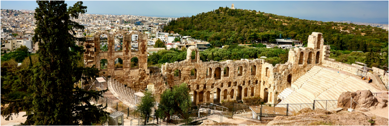

Trips
A Week in Greece: Athens, Mykonos, & Santorini
9 Days I 12 Days with Rome extension

Watch the setting sun from the hilltops of Greece’s most famous islands.
Cobblestone streets, arched white facades, ocean-blue roofs, and larger-than-life windmills are just a few of the picturesque Greek landscapes you can expect to find on this tour. Experience ancient history and open-air museums in the capital of Athens. Then, the quintessential, beautiful Greek islands you’ve been dreaming of come to life on the isles of Mykonos and Santorini.
Your package includes:
- 7 nights in handpicked hotels
- 7 breakfasts
- 3 dinners with beer or wine
- 3 sightseeing tours
- Expert Tour Director & local guides
From 2,279
The Greek Islands: Mykonos, Santorini, & Crete
14 Days I 16 Days with Athens extension
Take in the rich culture and history of Greece’s storied islands.
It’s nearly impossible to get a true taste of Greek culture without sampling its flavorful isles. Experience the relaxed lifestyle and meet friendly locals as you discover the character and history unique to each island. Absorb Hellenic heritage in ancient Athens before anchoring on the beaches of lively Mykonos. Cruise on the Aegean to the volcanic shores of Santorini and soak in Crete’s legendary landscapes.
Your package includes:
- 2 nights in handpicked hotels
- 12 breakfasts
- 5 dinners with beer or wine
- 3 sightseeing tours
- Expert Tour Director & local guides
From 3,249
Your package includes:
- 2 nights in handpicked hotels
- 12 breakfasts
- 5 dinners with beer or wine
- 3 sightseeing tours
- Expert Tour Director & local guides